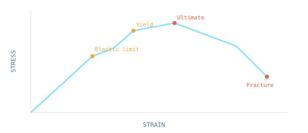

Stress, strain, torsion, bending and the mechanical behaviour of solid materials.

NOC: Strength of Materials — IIT Kharagpur
Click an option to see the correct answer and a short explanation instantly.